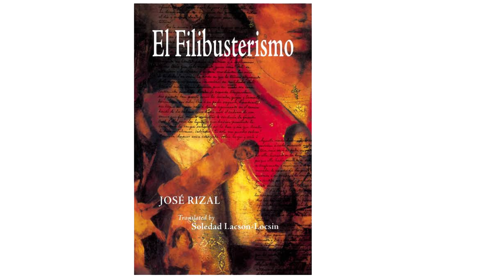

El Filibusterismo
El Filibusterismo was Rizal’s second novel and sequel to Noli Me Tangere. It was published in 1891 in Ghent, Belgium. The story has a darker and more serious tone and focuses on corruption, oppression, revenge, and the consequences of social injustice. The main character, Simoun, is the disguised Crisostomo Ibarra. Unlike the hopeful Ibarra in Noli Me Tangere, Simoun seeks revenge against those who have oppressed him and other Filipinos.
The novel encourages readers to think about the effects of injustice and the importance of meaningful social change.
Main Themes:
